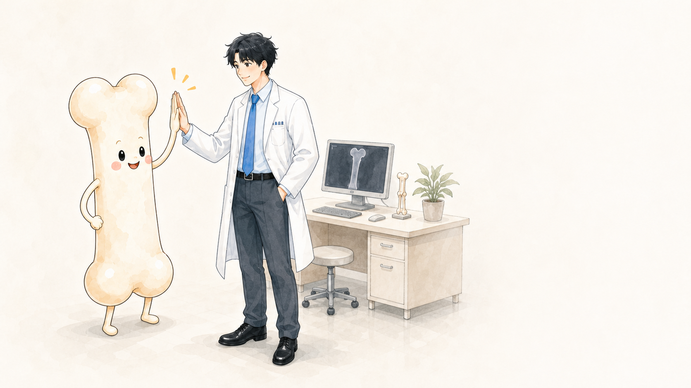

HEALTH JOURNAL
搜尋症狀、檢查、疾病或治療，也可以從分類瀏覽。
精選閱讀
先理解抽血、影像與必要穿刺各自回答什麼，再討論適合的下一步。
影像資訊需要放在一起理解，而不只是看大小。
數值需要和症狀、其他結果與用藥一起判讀。
不同檢查看見不同時間尺度。

年齡、病史、用藥與過去骨折也影響風險。
聯絡小麥醫師
這個表單用於內容建議、合作與一般聯絡，不提供線上問診，也請不要上傳或填寫病歷及敏感健康資料。
目前為 UI 示意；正式版本將加入隱私同意、垃圾訊息防護與送出結果提示。